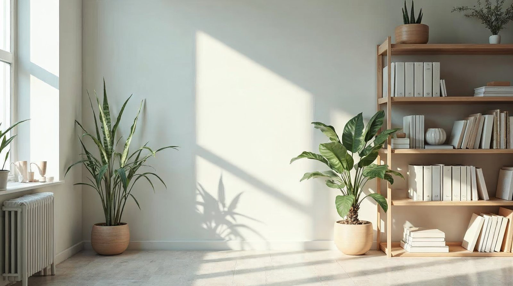

이종호 한의사 감수좋은꿈참사랑한의원 대표원장 (한의사 면허번호 19769)발행 2026-11-26 · 수정 2026-11-26
이 글의 차례
저녁 설거지를 하다 접시끼리 부딪히는 소리에 몸이 움찔합니다. 아이가 장난감을 떨어뜨린 소리, 식당에서 수저가 그릇에 닿는 소리, 버스 안내 방송까지 귀를 찌르듯 크게 들립니다. 가족들은 그 정도 소리가 뭐가 크냐고 하는데, 나에게는 귀가 아플 만큼 크게 들립니다.
이렇게 일상적인 소리가 지나치게 크고 불편하게 들리는 상태를 청각과민이라고 부릅니다. 소리를 잘 못 듣는 난청과는 반대처럼 보이지만, 실제로는 둘이 함께 있는 경우도 많습니다. 귀에서 소리가 나는 이명과 함께 오는 분도 흔합니다.
청각과민이 있는 분들은 사람 많은 곳을 피하게 되고, 귀마개를 늘 챙기게 되며, 가족 모임에서도 조용한 자리를 찾게 됩니다. 소리가 무서워 외출이 줄어들면 마음까지 위축되기 쉽습니다. 겉으로 드러나지 않는 불편이라 주변의 이해를 얻기 어려운 것도 힘든 점입니다.
저는 청각과민을 말씀하시는 분께 소리 자체보다 그 소리를 받아들이는 몸과 마음의 상태를 함께 여쭙니다. 잠은 어떤지, 오래 긴장한 시기가 있었는지, 큰 소리에 노출된 적이 있는지, 귀 진료를 받으셨는지를 하나씩 짚어 보면 살펴볼 방향이 정리됩니다.
청각과민은 어떤 상태인가요?
귀로 들어온 소리는 달팽이관에서 전기 신호로 바뀌어 청신경을 따라 뇌로 전해집니다. 뇌는 이 신호를 받아 소리의 크기와 의미를 판단하고, 필요 없는 소리는 낮추고 중요한 소리는 키우는 조절을 끊임없이 합니다. 덕분에 우리는 시끄러운 곳에서도 대화를 이어 갈 수 있습니다.
청각과민은 이 조절이 지나치게 예민해진 상태로 이해되고 있습니다. 귀로 들어온 소리는 같아도 뇌가 그 소리를 더 크게, 더 거슬리게 받아들이는 것입니다. 그래서 청력 검사에서는 정상으로 나오는데도 소리가 불편하다고 말씀하시는 분이 많습니다.
불편한 소리의 종류도 사람마다 다릅니다. 높고 날카로운 소리가 특히 힘든 분, 갑자기 나는 소리에 크게 놀라는 분, 여러 소리가 섞인 소음 속에서 금방 지치는 분이 있습니다. 귀가 찌르듯 아프다는 분도 있고, 머리가 울리거나 속이 불편해진다는 분도 있습니다.
왜 작은 소리도 크게 들릴까요
청각과민은 한 가지 이유로 설명되지 않는 경우가 많습니다. 진료실에서 흔히 겹쳐 있는 이유는 이렇습니다.
- 공연장, 공사장, 이어폰처럼 큰 소리에 오래 노출된 경우
- 이명이 함께 있어 귀에 늘 신경이 쏠려 있는 경우
- 잠이 부족하고 몸이 지쳐 감각 전반이 날카로워진 경우
- 오래 이어진 긴장, 걱정, 불안
- 두통이나 편두통이 잦아 소리와 빛에 함께 예민해진 경우
- 턱을 꽉 무는 습관, 목과 어깨의 긴장
- 귀 진료가 필요한 귀 질환이나 얼굴 신경의 변화
소음에 놀란 경험 뒤에 시작되는 경우도 있습니다. 갑자기 큰 소리를 가까이서 들은 뒤 귀가 아프고 먹먹했다가, 그 뒤로 작은 소리에도 귀가 예민해졌다고 말씀하시는 분이 계십니다. 이런 경우에는 귀 상태를 먼저 확인받는 것이 좋습니다.
한의학에서는 귀를 신의 기운과 이어서 보아, 몸이 지치고 기운이 허해지면 귀가 쉽게 울리고 예민해진다고 표현하기도 합니다. 긴장으로 열이 위로 오르면 소리에 날카롭게 반응한다고 보기도 합니다. 진찰에서 쓰는 전통적인 설명 방식이며, 청력 검사와 생활을 함께 놓고 판단합니다.
비슷해 보여도 나눠 보는 것들
이명은 바깥에 소리가 없는데도 귀나 머릿속에서 소리가 들리는 것이고, 청각과민은 바깥의 실제 소리가 지나치게 크게 들리는 것입니다. 둘이 함께 있는 경우가 많지만 살펴볼 방향이 조금 달라서 나눠서 여쭙습니다.
특정한 소리, 예를 들어 다른 사람이 음식을 씹는 소리나 숨소리, 펜을 딸깍이는 소리에 크기와 상관없이 강한 짜증이나 불쾌감이 드는 경우는 따로 미소포니아라고 부르기도 합니다. 소리의 크기보다 소리에 대한 감정 반응이 중심이라는 점이 다릅니다.
한쪽 귀에서만 소리가 울리듯 크게 들리고, 얼굴 한쪽이 무겁거나 눈이 잘 감기지 않는다면 얼굴 신경 쪽 변화를 함께 확인해야 합니다. 귀가 꽉 막힌 듯 먹먹하면서 내 목소리가 크게 울린다면 귀 안쪽 압력을 조절하는 관 쪽을 살펴봅니다.
소리뿐 아니라 빛과 냄새에도 함께 예민해지고, 두통이 잦다면 편두통 흐름을 함께 봅니다. 잠이 크게 부족하거나 마음이 오래 지친 시기와 겹친다면 감각 전반이 예민해진 상태일 가능성도 생각합니다.
귀마개와 소리 피하기, 어디까지가 좋을까요?
소리가 괴로우면 귀마개를 늘 끼고 조용한 곳만 찾게 됩니다. 시끄러운 공사장이나 공연장처럼 실제로 큰 소리가 나는 곳에서는 귀를 보호하는 것이 맞습니다. 하지만 일상적인 소리까지 계속 막으면 귀와 뇌가 조용함에 맞춰져, 귀마개를 뺐을 때 소리가 더 크게 느껴지는 흐름이 생기기도 합니다.
그래서 집처럼 편안한 곳에서는 귀마개를 빼고, 대신 잔잔한 배경음을 낮게 틀어 두는 방법을 권합니다. 빗소리나 바람 소리, 잔잔한 음악처럼 거슬리지 않는 소리를 작게 깔아 두면 갑자기 나는 소리에 덜 놀라게 되는 데 도움이 될 수 있습니다.
소리에 다시 익숙해지는 과정은 천천히 가야 합니다. 견딜 수 있는 정도의 소리 환경에 조금씩 머무는 시간을 늘려 가되, 귀가 아프거나 머리가 울리면 그날은 쉬어 가세요. 이비인후과에서 소리 적응 훈련을 안내받는 경우도 있으니 함께 상의해 보시길 권합니다.

집과 직장에서 소리 환경 바꾸기
생활 공간의 소리를 조금 부드럽게 바꾸는 것도 도움이 됩니다. 식탁 의자 다리에 펠트를 붙이고, 그릇을 놓는 자리에 천 매트를 깔면 부딪히는 소리가 한결 작아집니다. 두꺼운 커튼과 러그는 방 안에 울리는 소리를 줄여 줍니다.
직장에서는 가능하다면 소음원에서 조금 떨어진 자리를 요청하거나, 회의실처럼 소리가 울리는 공간에서는 출입문 쪽 자리에 앉아 잠깐씩 나갈 수 있게 해 두세요. 지금 상태를 가까운 동료에게 짧게 설명해 두면 마음의 부담이 덜어집니다.
점심시간이나 쉬는 시간에는 시끄러운 식당 대신 조용한 곳에서 잠시 귀를 쉬게 해 주세요. 짧은 쉼이 오후의 예민함을 덜어 줍니다.
이어폰을 쓸 때는 주변 소리를 이기려고 볼륨을 키우기보다 소음을 줄여 주는 기능을 활용해 작은 볼륨으로 들으시길 권합니다. 한 시간 들으면 잠깐 이어폰을 빼고 귀를 쉬게 해 주세요.
집에서 해 볼 수 있는 간단한 자기 점검
일주일 정도 아래 질문에 답해 보시면 어느 쪽에 가까운지 보이기 시작합니다.
- 한쪽 귀인가요, 양쪽 귀인가요?
- 어떤 소리가 가장 힘든가요? 높은 소리, 갑작스러운 소리, 섞인 소음 가운데 어느 쪽인가요?
- 소리를 들으면 귀가 아픈가요, 머리가 울리나요, 짜증이 먼저 나나요?
- 이명이나 귀 먹먹함, 어지럼이 함께 있나요?
- 잠을 설친 날, 긴장한 날 더 심한가요?
- 빛이나 냄새에도 함께 예민해지나요?
소리가 특히 힘들었던 상황을 짧게 적어 두세요. 장소, 소리의 종류, 그때의 몸 상태를 함께 적으면 어떤 조건에서 예민함이 커지는지 보이기 시작합니다.
반대로 소리가 덜 거슬렸던 날도 함께 적어 두세요. 잠을 푹 잔 날이었는지, 산책을 다녀온 날이었는지, 마음이 편했던 날이었는지를 보면 내 몸이 소리를 덜 예민하게 받아들이는 조건이 조금씩 보입니다. 그 조건을 하루에 하나씩 늘려 가는 것이 생활 관리의 출발점이 됩니다.
먼저 이렇게 여쭙니다
처음 오시면 저는 대략 이런 순서로 여쭙니다. 미리 떠올려 오시면 이야기가 훨씬 수월해집니다.
- 소리가 크게 들리기 시작한 것은 언제부터, 어떤 계기였나요?
- 이비인후과에서 청력 검사를 받으셨나요? 결과는 어땠나요?
- 이명, 귀 먹먹함, 어지럼, 두통이 함께 있나요?
- 큰 소리에 노출되는 일이나 이어폰 사용은 어느 정도인가요?
- 잠드는 시각과 깨는 시각, 밤에 깨는 횟수는 어떠신가요?
- 요즘 긴장하거나 걱정되는 일이 이어지고 있나요?
청력 검사 결과지나 이비인후과에서 받은 약이 있다면 함께 가져와 주세요. 검사 결과를 보면 귀 쪽 확인이 더 필요한지, 생활과 긴장 쪽을 먼저 살필지 정하기가 쉬워집니다.
일상에서 먼저 해 볼 수 있는 것
청각과민은 소리를 피하기만 하기보다, 귀와 몸이 덜 예민해질 수 있는 바탕을 만드는 쪽이 오래갑니다. 아래 가운데 하나만 골라 2주 정도 이어 가 보세요.
- 집에서는 귀마개 대신 잔잔한 배경음을 낮게 틀어 두기
- 식탁과 바닥에 천 매트나 러그를 깔아 생활 소음 줄이기
- 잠드는 시각과 깨는 시각을 일정하게 맞추기
- 시끄러운 곳에 다녀온 뒤에는 조용한 곳에서 10분 쉬어 가기
- 하루 몇 번 숨을 길게 내쉬며 어깨와 턱 힘 빼기
- 이어폰 볼륨은 작게, 한 시간마다 쉬어 가기
턱을 꽉 무는 습관이 있다면 귀 주변 근육까지 긴장이 번지기 쉽습니다. 하루 몇 번 어금니를 살짝 떼고 혀끝을 윗니 뒤에 가볍게 대 보세요. 잠잘 때 이를 가는 분은 치과에서 상의해 보시길 권합니다.
커피와 술이 귀의 예민함을 키운다고 느끼는 분도 계십니다. 오후 늦게 마시는 커피는 잠을 얕게 만들어 다음 날 감각을 더 날카롭게 할 수 있으니, 오전 한두 잔으로 줄여 보세요.
몸을 움직이는 시간도 챙겨 주세요. 조용한 공원이나 동네 골목을 20분 정도 걷는 시간은 긴장을 풀고 잠을 깊게 하는 데 도움이 될 수 있습니다. 걷는 동안 들리는 바람 소리, 발소리처럼 부드러운 소리에 귀를 기울여 보는 것도 소리와 다시 편해지는 작은 연습이 됩니다.
한의원에서 함께 살필 수 있는 경우
- 청력 검사에서 큰 이상은 없다는데 소리가 계속 크게 들리는 경우
- 이명과 청각과민이 함께 있어 잠들기 어려운 경우
- 오래 이어진 긴장과 피로 속에서 소리에 예민해진 경우
- 목과 어깨, 턱이 늘 굳어 있고 귀 주변이 묵직한 경우
- 두통이 잦고 소리와 빛에 함께 예민해지는 경우
좋은꿈참사랑한의원에 오시면 먼저 아래 '먼저 확인이 필요한' 신호가 없는지부터 봅니다. 그다음 맥을 짚고, 귀 주변과 턱, 목 옆과 어깨를 직접 만져 보며 굳은 자리를 확인합니다. 잠과 소화, 긴장의 흐름도 함께 여쭙습니다.
진찰한 내용을 바탕으로 생활에서 바꿔 볼 것 하나와 함께 침, 온열 관리, 한약 상담 가운데 지금 상태에 맞는 것을 정합니다. 한약을 상의할 때는 드시는 약을 모두 확인하고 신중하게 정합니다. 임신 중이시라면 먼저 알려 주시고 산부인과와도 상의해 주세요.
이비인후과나 정신건강의학과에서 받는 치료와 처방약은 그대로 이어 가시면서 함께 살핍니다. 처방받은 약은 처방한 선생님과 상의 없이 멈추지 않습니다. 한의원 진료는 그 치료를 대신하기보다 곁에서 잠과 긴장, 몸의 피로를 함께 돌보는 것이라고 생각해 주시면 됩니다.
이렇게 기록해 오시면 상담이 쉬워집니다
청각과민은 그날의 몸 상태와 환경에 따라 세기가 크게 달라집니다. 2주 정도 간단히 적어 오시면 흐름이 훨씬 잘 보입니다.
- 소리가 특히 힘들었던 시각, 장소, 소리의 종류
- 0에서 10 사이 불편 점수
- 이명, 귀 아픔, 두통이 함께 있었는지
- 잠든 시각과 깬 시각, 밤에 깬 횟수
- 커피, 술, 긴장했던 날 표시
- 귀마개나 배경음을 쓴 시간
기록을 나란히 놓고 보면 잠을 잘 잔 날과 설친 날, 쉬어 간 날과 무리한 날의 차이가 조금씩 드러납니다.
소리와 다시 편해지기까지
청각과민은 하루아침에 달라지기보다 조금씩 익숙해져 가는 경우가 많습니다. 소리가 힘든 날도 있고 덜한 날도 있다는 것을 기억해 두시면 마음이 조금 덜 조급해집니다.
이번 주에는 집에서 배경음 틀어 두기, 혹은 잠드는 시각 맞추기 하나만 골라 보세요. 다음에 오시면 2주 동안의 기록을 함께 펼쳐 놓고, 소리가 덜 거슬렸던 날은 어떤 날이었는지부터 찾아보겠습니다.
이런 증상은 먼저 확인이 필요합니다
- 갑자기 한쪽 귀가 잘 안 들리거나 먹먹하면서 심한 어지럼이 함께 오는 경우
- 한쪽 귀에 소리가 크게 울리면서 얼굴 한쪽이 처지거나 눈이 잘 감기지 않는 경우
이런 신호가 있으면 한의원보다 가까운 병원이나 응급실을 먼저 찾으세요.
함께 읽으면 좋은 글
- 귀에서 소리가 들리는 이명이 있을 때는 어떤 점을 살펴보나요?
- 작은 소리에도 자주 깨는 분은 어떤 점을 살펴보나요?
- 갑자기 한쪽 귀가 잘 안 들리는 돌발성 난청, 병원 치료와 함께 회복기에는 무엇을 살피나요?
- 시끄러운 지하철로 출퇴근한 뒤 귀가 먹먹하고 삐 소리가 날 때는 어떻게 살피나요?
- 사람 많은 스터디카페에서 작은 소리에도 예민해지고 집중이 안 될 때는?
여쭙는 것
- 소리가 크게 들리기 시작한 것은 언제부터, 어떤 계기였나요?
- 이비인후과에서 청력 검사를 받으셨나요? 결과는 어땠나요?
- 이명, 귀 먹먹함, 어지럼, 두통이 함께 있나요?
생활에서 해 볼 것
- 집에서는 귀마개 대신 잔잔한 배경음을 낮게 틀어 두기
- 식탁과 바닥에 천 매트나 러그를 깔아 생활 소음 줄이기
- 잠드는 시각과 깨는 시각을 일정하게 맞추기
한의원에서 함께 살필 것
- 청력 검사에서 큰 이상은 없다는데 소리가 계속 크게 들리는 경우
- 이명과 청각과민이 함께 있어 잠들기 어려운 경우
- 오래 이어진 긴장과 피로 속에서 소리에 예민해진 경우
먼저 확인이 필요한 신호
- 갑자기 한쪽 귀가 잘 안 들리거나 먹먹하면서 심한 어지럼이 함께 오는 경우
- 한쪽 귀에 소리가 크게 울리면서 얼굴 한쪽이 처지거나 눈이 잘 감기지 않는 경우
한눈에 보는 표
| 구분 | 핵심 |
|---|---|
| 여쭙는 것 | 소리가 크게 들리기 시작한 것은 언제부터, 어떤 계기였나요? 이비인후과에서 청력 검사를 받으셨나요? 결과는 어땠나요? |
| 생활에서 해 볼 것 | 집에서는 귀마개 대신 잔잔한 배경음을 낮게 틀어 두기 식탁과 바닥에 천 매트나 러그를 깔아 생활 소음 줄이기 |
| 한의원에서 함께 살필 것 | 청력 검사에서 큰 이상은 없다는데 소리가 계속 크게 들리는 경우 이명과 청각과민이 함께 있어 잠들기 어려운 경우 |
| 먼저 확인이 필요한 신호 | 갑자기 한쪽 귀가 잘 안 들리거나 먹먹하면서 심한 어지럼이 함께 오는 경우 한쪽 귀에 소리가 크게 울리면서 얼굴 한쪽이 처지거나 눈이 잘 감기지 않는 경우 |
자주 묻는 질문
청력 검사가 정상인데 왜 소리가 크게 들리나요?
청각과민은 귀로 들어온 소리를 뇌가 받아들이는 조절이 예민해진 경우가 많아, 청력 검사에서는 정상으로 나오기도 합니다. 잠, 긴장, 소음 노출 같은 요인을 함께 살펴보는 것이 도움이 됩니다.
귀마개를 계속 끼고 있어도 되나요?
실제로 큰 소리가 나는 곳에서는 귀를 보호하는 것이 좋습니다. 다만 일상 소리까지 계속 막으면 귀마개를 뺐을 때 더 크게 느껴질 수 있어, 집에서는 잔잔한 배경음을 낮게 틀어 두는 쪽을 권합니다.
청각과민과 이명은 같은 것인가요?
이명은 바깥에 소리가 없는데 들리는 것이고, 청각과민은 실제 소리가 지나치게 크게 들리는 것입니다. 함께 있는 경우가 많아 진료 때 둘을 나눠서 여쭙습니다.
스트레스 때문에 소리에 예민해질 수 있나요?
긴장과 피로가 오래 이어지면 감각 전반이 날카로워져 소리에도 예민해지는 경우가 있습니다. 귀 상태를 먼저 확인한 뒤, 잠과 긴장을 함께 살피는 방향으로 정합니다.
한의원 진료는 이비인후과 치료와 함께 받아도 되나요?
이비인후과 치료와 처방약은 그대로 이어 가시면서 함께 살필 수 있습니다. 검사 결과와 드시는 약을 알려 주시면 그에 맞춰 진료 방향을 정합니다.
좋은꿈참사랑한의원은 재진 때 지난번 이야기부터 이어서 여쭙니다. 진료시간과 예약은 오시는 길에서 확인하세요.
어디서 상담받을 수 있나요?
좋은꿈참사랑한의원은 서울 동작구 만양로2길 2 신성빌딩 3층·5층(서울 동작구 상도동, 7호선 상도역 3번 출구 근처)에 있습니다. 한의사 3명(이종호 대표원장, 조영기 수석진료원장, 정원영 진료원장)이 진료합니다. 진료시간은 평일 09:30~20:00(점심 13:00~14:00), 토·일·공휴일 09:30~15:00이며, 방문 전 전화로 확인을 권합니다. 예약은 네이버 예약, 카카오톡 상담, 전화 02-815-7510로 받습니다.
이 글은 일반적인 건강 정보이며 개인의 진단이나 치료를 대신하지 않습니다. 증상이 있거나 복용 중인 약이 있다면 진료를 통해 확인하세요. 치료 효과는 개인마다 다를 수 있습니다.
작성 기준: 일반적으로 알려져 있는 건강 정보를 참고해 정리했습니다(대표원장 감수). 증상 기록은 1~2주 동안 하루 1회, 비슷한 시간에 적어 오시면 지난 상태와 비교하기 쉽습니다.